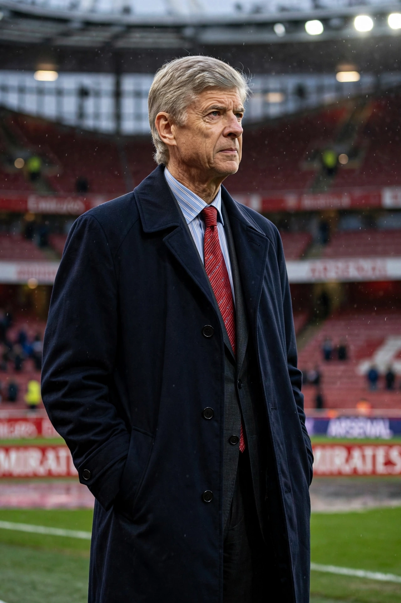

Arsène Charles Ernest Wenger (born 22 October 1949, Strasbourg) is a French football manager and former player, best known for managing Arsenal from 1996 to 2018 — the longest-serving and most successful manager in the club's history by trophies of the modern era.

| Arsène Wenger | |
|---|---|
| Born | 22 October 1949, Strasbourg, France |
| Playing career | Midfielder/defender; Strasbourg among others |
| Managerial | Nancy, Monaco (1987–94), Nagoya Grampus Eight, Arsenal (1996–2018) |
Arriving largely unknown in England ("Arsène Who?" ran one headline), Wenger revolutionised English football with new training, diet and scouting methods and an emphasis on technical, attacking play. He won three Premier League titles and seven FA Cups. His 2003–04 "Invincibles" completed a league season unbeaten — 38 games — part of a record 49-match unbeaten run. He oversaw the move from Highbury to the Emirates Stadium in 2006, consistently qualifying for the Champions League despite transfer constraints. He left in 2018 after 22 years and over 1,200 games.
In 2019 Wenger became FIFA's Chief of Global Football Development, advocating changes including biennial World Cup proposals and offside-law reform. With Monaco he had won Ligue 1 in 1988 and developed players such as George Weah and Thierry Henry, whom he later signed for Arsenal.